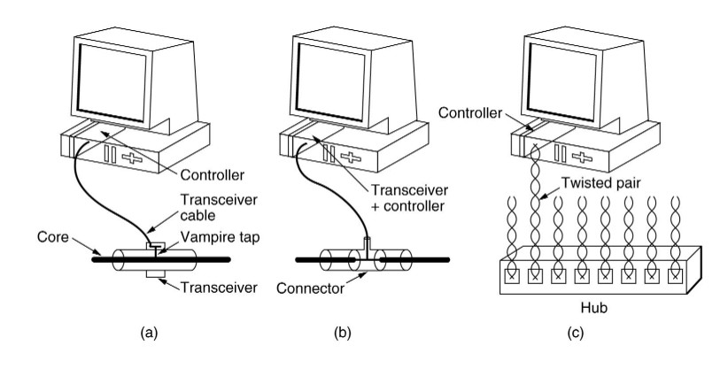

Computer Networks
Prev|
Next|
Index
IEEE 802.3 and Ethernet
- Very popular LAN standard.
- Ethernet and IEEE 802.3 are distinct standards but as they are very similar to one another these words are used interchangeably.
- A standard for a 1-persistent CSMA/CD LAN.
- It covers the physical layer and MAC sublayer protocol.
Ethernet Physical Layer
A Comparison of Various Ethernet and IEEE 802.3 Physical-Layer Specifications
| Characteristic |
Ethernet Value |
IEEE 802.3 Values |
| 10Base5 |
10Base2 |
10BaseT |
10BaseF |
10 Base -TX |
100BaseT4 |
|
Data rate (Mbps)
|
10
|
10
|
10
|
10
|
10
|
100
|
100
|
|
Signaling method
|
Baseband
|
Baseband
|
Baseband
|
Baseband
|
Baseband
|
Baseband
|
Baseband
|
|
Maximum segment length (m)
|
500
|
500
|
185
|
100
|
2,000
|
100
|
100
|
|
Media
|
50-ohm coax (thick)
|
50-ohm coax (thick)
|
50-ohm coax (thin)
|
Unshielded twisted-pair cable
|
Fiber-optic
|
Cat 5 UTP
|
Unshielded twisted-pair cable
|
|
Nodes/segment
|
100
|
100
|
30
|
1024
|
1024
|
|
|
|
Topology
|
Bus
|
Bus
|
Bus
|
Star
|
Point-to-point
|
Bus
|
Bus
|
10Base5 means it operates at 10 Mbps, uses baseband signaling and can support segments of up to 500 meters. The 10Base5 cabling is popularly called the Thick Ethernet. Vampire taps are used for their connections where a pin is carefully forced halfway into the co-axial cable's core as shown in the figure below. The 10Base2 or Thin Ethernet bends easily and is connected using standard BNC connectors to form T junctions (shown in the figure below). In the 10Base-T scheme a different kind of wiring pattern is followed in which all stations have a twisted-pair cable running to a central hub (see below). The difference between the different physical connections is shown below:

(a) 10Base5 (b)10Base2 (c)10Base-T
All 802.3 baseband systems use Manchester encoding , which is a way for receivers to unambiguously determine the start, end or middle of each bit without reference to an external clock.
There is a restriction on the minimum node spacing (segment length between two nodes) in 10Base5 and 10Base2 and that is 2.5 meter and 0.5 meter respectively. The reason is that if two nodes are closer than the specified limit then there will be very high current which may cause trouble in detection of signal at the receiver end.
Connections from station to cable of 10Base5 (i.e. Thick Ethernet) are generally made using vampire taps and to 10Base2 (i.e. Thin Ethernet) are made using industry standard BNC connectors to form T junctions.
To allow larger networks, multiple segments can be connected by repeaters as shown.
A repeater is a physical layer device. It receives, amplifies and retransmits signals in either direction.
Note: To connect multiple segments, amplifier is not used because amplifier also amplifies the noise in the signal, whereas repeater regenerates signal after removing the noise.
IEEE 802.3 Frame Structure
Preamble
(7 bytes) |
Start of Frame Delimiter
(1 byte) |
Dest. Address
(2/6 bytes) |
Source Address
(2/6 bytes) |
Length
(2 bytes) |
802.2 Header+Data
(46-1500 bytes) |
Frame Checksum
(4 bytes) |
A brief description of each of the fields
-
Preamble :Each frame starts with a preamble of 7 bytes, each byte containing the bit pattern 10101010. Manchester encoding is employed here and this enables the receiver's clock to synchronize with the
sender's and initialise itself.
-
Start of Frame Delimiter :This field containing a byte sequence 10101011 denotes the start of the frame itself.
-
Dest. Address :The standard allows 2-byte and 6-byte addresses. Note that the 2-byte addresses are always local addresses while the 6-byte ones can be local or global.
2-Byte Address - Manually assigned address
Individual(0)/Group(1)
(1 bit) |
Address of the machine
(15 bits) |
6-Byte Address - Every Ethernet card with globally
unique address
Individual(0)/Group(1)
(1 bit) |
Universal(0)/Local(1)
(1 bit) |
Address of the machine
(46 bits) |
Multicast : Sending to group of stations. This is ensured by setting the first bit in either 2-byte/6-byte addresses to 1.
Broadcast : Sending to all stations. This can be done by setting all bits in the address field to 1.All
Ethernet cards(Nodes) are a member of this group.
-
Source Address :Refer to Dest. Address. Same holds true over here.
-
Length : The Length field tells how many bytes are present in the data field, from a minimum of 0 to a maximum of 1500.
The Data and padding together can be from 46bytes to 1500 bytes as the valid frames must be
at least 64 bytes long, thus if data is less than 46 bytes the amount of padding
can be found out by length field.
-
Data :Actually this field can be split up into two parts - Data(0-1500 bytes) and Padding(0-46 bytes).
Reasons for having a minimum length frame :
- To prevent a station from completing the transmission of a short frame before the first bit has even reached the far end of the cable, where it may collide with another frame. Note that the transmission time ought to be greater than twice the propagation time between two farthest nodes.
transmission time for frame > 2*propagation time between two farthest nodes
- When a transceiver detects a collision, it truncates the current frame, which implies that stray bits and pieces of frames appear on the cable all the time. Hence to distinguish between valid frames from garbage, 802.3 states that the minimum length of valid frames ought to be 64
bytes (from Dest. Address to Frame Checksum).
-
Frame Checksum : It is a 32-bit hash code of the data. If some bits are erroneously received by the
destination (due to noise on the cable), the checksum computed by the destination wouldn't match with the checksum sent and therefore the error will be detected. The checksum algorithm is a cyclic redundancy checksum (CRC) kind. The checksum includes the packet from Dest. Address to Data field.
Ethernet Frame Structure
Preamble
(8 bytes) |
Dest. Address
(2/6 bytes) |
Source Address
(2/6 bytes) |
Type
(2 bytes) |
Data
(46-1500 bytes) |
Frame Checksum
(4 bytes) |
A brief description of the fields which differ from IEEE 802.3
-
Preamble :The Preamble and Start of Frame Delimiter are merged into one in Ethernet standard. However, the contents of the first 8 bytes remains the same in both.
-
Type :The length field of IEEE 802.3 is replaced by Type field, which denotes the type of packet being sent viz. IP, ARP, RARP, etc.
If the field indicates a value less than 1500 bytes then it is length field of
802.3 else it is the type field of Ethernet packet.
Truncated Binary Exponential Back off
In case of collision the node transmitting backs off by a random number of
slots , each slot time being equal to transmission time of 512
bits (64 Byte- minimum size of a packet) in the following fashion:
No of Collision
Random No of slots
1st
0-1
2nd
0-3
3rd
0-7
|
|
|
|
10th
0-1023
---------------------------------------------
11th
0-1023
12th
0-1023
|
|
16th
0-1023
In general after i collisions a random number between 0-2^i-1 is chosen , and
that number of slots is skipped. However, after 10 collisions have been reached
the randomization interval is frozen at maximum of 1023 slots. After 16
collisions the controller reports failure back to the computer.
5-4-3 Rule
Each version of 802.3 has a maximum cable length per segment because long propagation time leads to difficulty in collision detection. To compensate for this
the transmission time has to be increased which can be achieved by slowing down the transmission rate or increasing the packet size, neither of which is
desirable. Hence to allow for large networks, multiple cables are connected via repeaters. Between any two nodes on an Ethernet network, there can be at most five segments, four repeaters and three populated segments (non-populated segments are those which do not have any machine connected between the two repeaters). This is known as the 5-4-3 Rule.
Image References:
- http://homepages.ius.edu/rwisman/b438/Html/4-14.jpg
back to top
Prev| Next |
Index